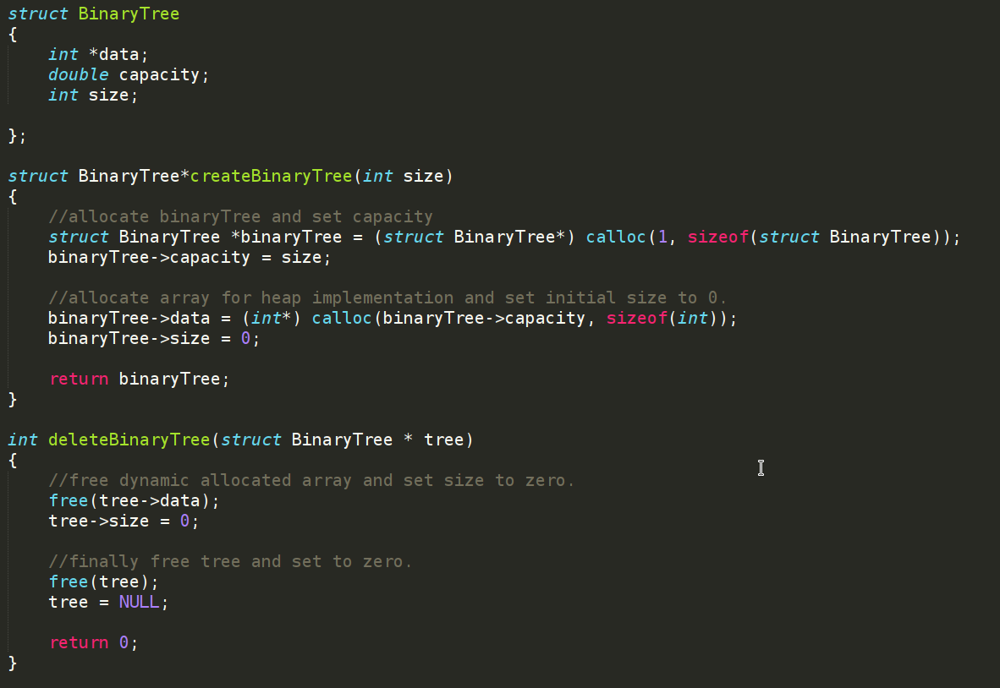
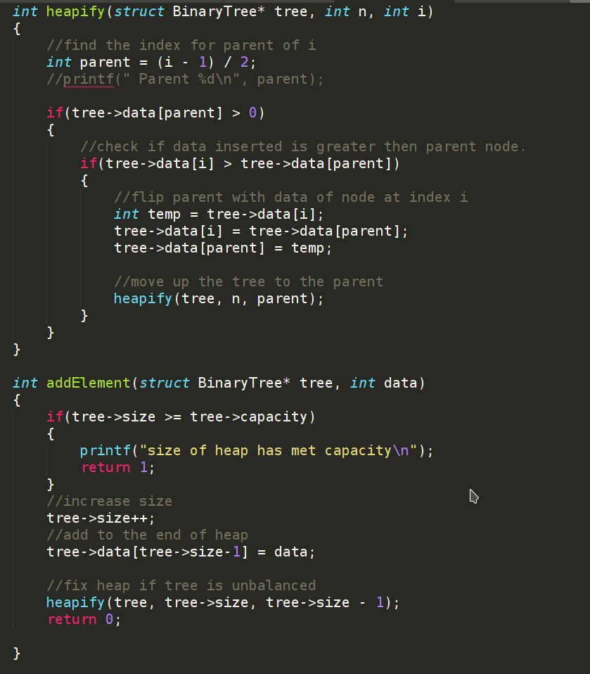

This project is my starting point in order to better understand data structure. I decided to implement an Heap as a implicit data structure. The binary tree structure consists of of a dynamically allocated array, the size capacity of the Heap and the number of values in the Heap
Struct of heap:
Adding values to the heap:
AddElement adds the new value to the end of the array and increases the size value. The AddElement calls heapify to up-heapify starting from the last node to balance the heap. When heapify is called, the values of i and the parent are compared and swapped if data is greater the the parent. Then heapify is called recursively for the parent moving up the tree to help build the sorted heap.